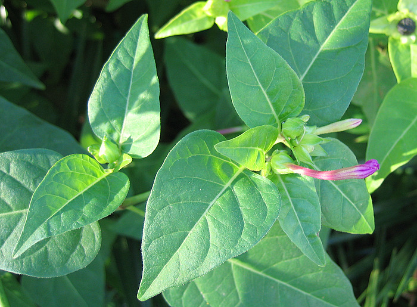
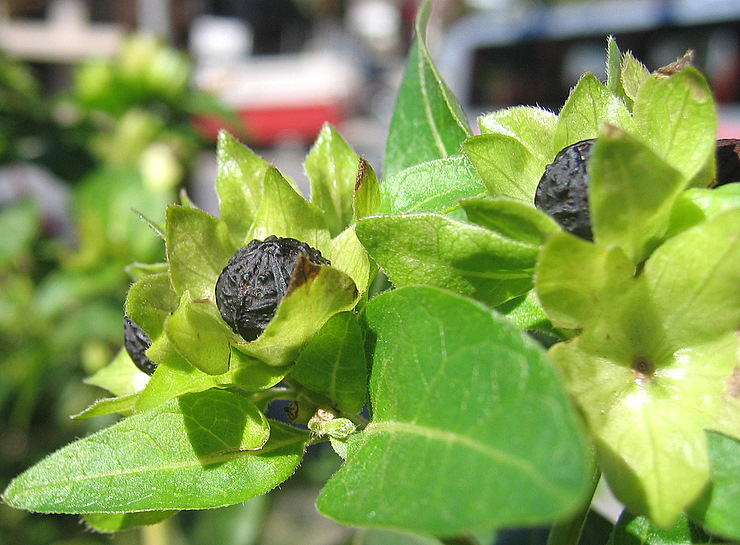
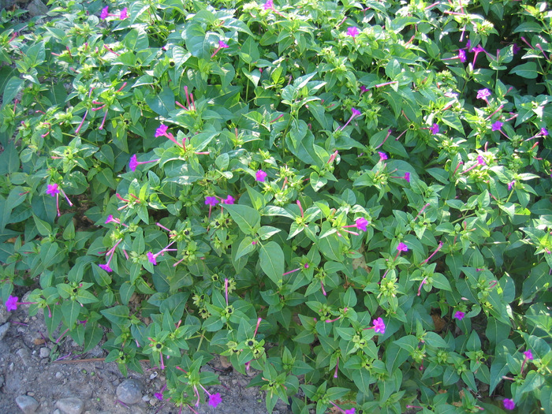
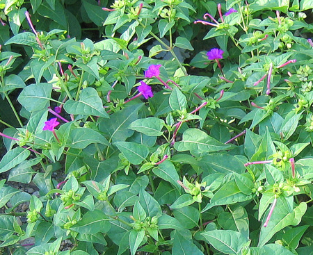
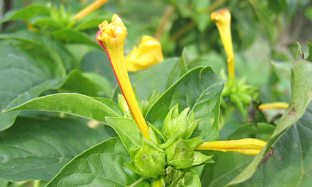
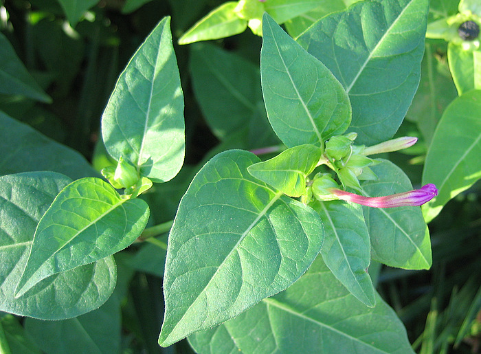
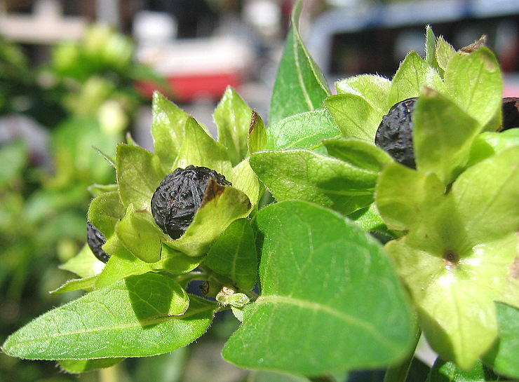

Mirabilis jalapa Agia Galini 28 octobre 2006 Mirabilis jalapa Akoumia 29 octobre 2006

Mirabilis jalapa Agia Galini 28 octobre 2006

Mirabilis jalapa Agia Galini 28 octobre 2006

Mirabilis jalapa Agia Galini 28 octobre 2006
| PHRYGANA | Fauna | Flora |
additions nouveautés |
espèces species |
contact -
info - commentaires phrygana1 (at) gmail.com |
| Mirabilis jalapa L. |
| 19 | Flora | NYCTAGINACEAE | Mirabilis |
 Mirabilis jalapa Agia Galini 28 octobre 2006 |
| fr: Belle-de-nuit en: Four-o-clock de: Schöne der Nacht | |
| Feuilles: pétiolées, oblongues à lancéolées. | |
| Tige charnue, très ramifiée, forte et renflée aux nœuds. | |
| Fleurs: corolle en trompette blanche, rose, rouge vif ou panachée. | |
| Fruits: curieuse forme de citron verruqueux, noirs à maturité, d'environ 10 mm. | |
| Hauteur: 40 - 80 cm | Type biologique: nanophanérophyte sempervirent |
| Floraison: mars avril mai juin juillet août septembre octobre | |
| Altitudes: 0 - 450 m | |
| Statut en Crète: cultivé - cultivated, naturalisé - naturalized | |
| Biotopes en Crète: jardins, parcs, trottoirs, terrains vagues, abords des habitations. | |
| Origine: Amériques tropicales | |
| Note: Les fleurs s'ouvrent la nuit. | |
|

 Mirabilis jalapa Agia Galini 28 octobre 2006 Mirabilis jalapa Akoumia 29 octobre 2006 |
Mirabilis jalapa Agia Galini 28 octobre 2006 |
 Mirabilis jalapa Agia Galini 28 octobre 2006 |
 Mirabilis jalapa Agia Galini 28 octobre 2006 |
| 11 avril 2010 |
| © paul fontaine -- © Phrygana.eu 2007 -- 2013 |